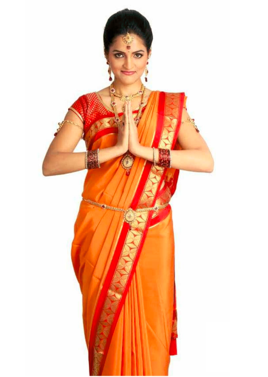
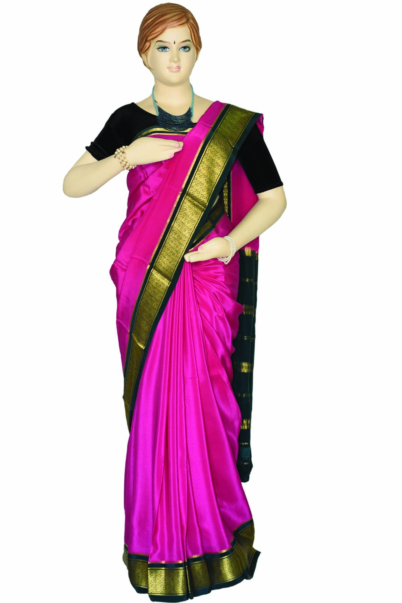
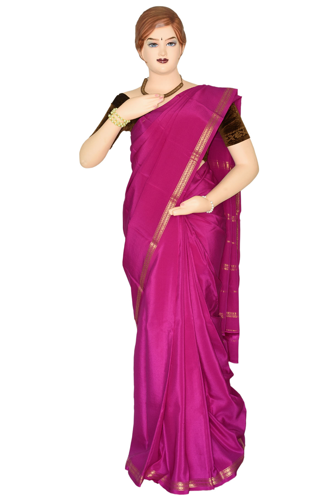
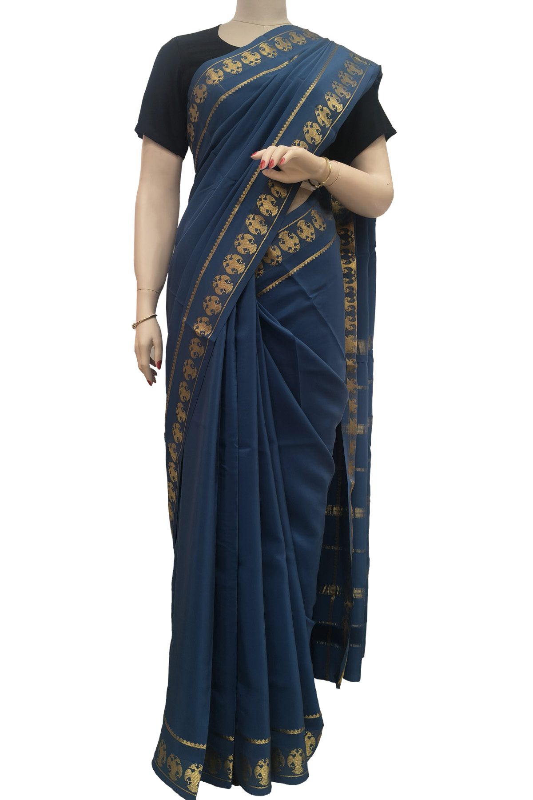
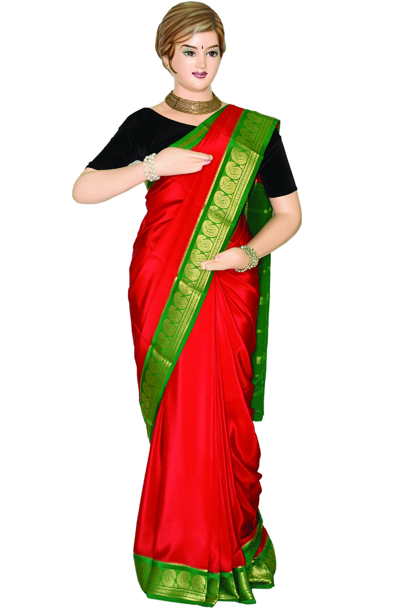
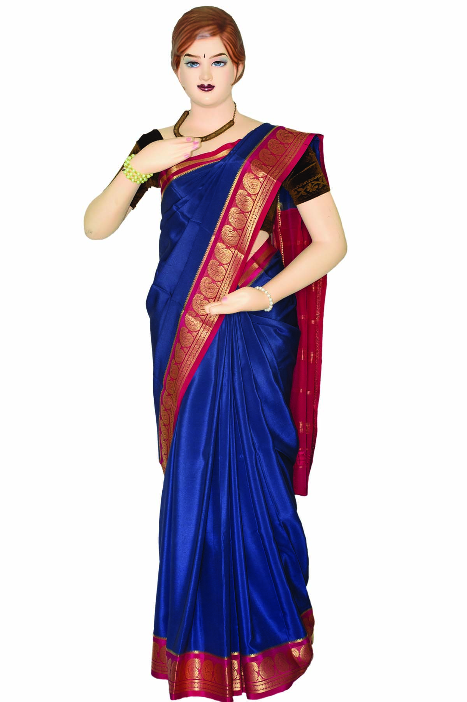

Our Heritage
1912Established by Maharaja Nalvadi Krishnaraja Wodeyar with ten Swiss looms, our Mysore weaving factory once dressed the royal court. A century on, every saree is still reeled, dyed and woven by us — from cocoon to drape, under one roof.
-
1912

The royal looms
Maharaja Nalvadi Krishnaraja Wodeyar sets up the Mysore weaving factory with ten looms imported from Switzerland.
-
1980

KSIC is formed
The factory passes to Karnataka Silk Industries Corporation, a Government of Karnataka enterprise.
-
2012

A century of weaving
The first Government industry in Karnataka to celebrate its centenary year.
-
GI‑11

Only one Mysore Silk
Geographical Indication registration makes KSIC the sole proprietor of “Mysore Silk”.
Signature Weave
Article 550/2/8 CD
One weave, several designs, 19 contrast-border colourways. Scroll to explore.


-
01
Mulberry silk, 26–28 denier
Yarn from cocoons reared in the old Mysore region, high-twist for its signature lustre.
-
02
Pure gold zari
Zari that will not tarnish — it stays bright through decades of wear.
-
03
Woven in Mysore
Reeled, dyed and woven in our own factories in Mysore district.
-
04
Authenticated
A unique code and hologram on every zari saree, backed by GI registration.
The Saree Edit
Pure Mysore Silk Sarees
Shop by category
For every occasion
Menswear & Accessories
Silk, tailored
Silk Guide · 01
All that shines
is not silk.
What is commonly sold as “art silk” is not natural silk. Pure silk is natural and eco-friendly — it comes from the silkworm. The market is full of imitations sold under glamorous names: art silk, artificial silk and more. Here is a simple test anyone can do, anywhere, anytime.
-
01
Pull a thread
Take a small thread from both directions — warp and weft. Hundred percent silk means both are made from pure silk yarn.
-
02
Burn it
The layman’s “Burning Test” can be carried out at any place and at any time.
-
03
Smell it
Pure silk gives off the smell of burning hair.
-
04
Crush the residue
It leaves a black residue that is easily crushed to powder between your fingers.
Silk Guide · 02
Taking care
of silk
Treated gently, a silk saree keeps its lustre for generations. Follow these steps for washing and ironing.
Precautions during washing
Silk with doubtful colour fastness may be steeped in cold water with a small amount of citric or acetic acid for 1–2 minutes before washing.
-
Soft water
Use soft water
Always wash silks in soft water. If the water is hard, add a pinch of borax or ammonia.
-
Neutral pH
Choose a neutral soap
A good neutral soap as flakes or solution. A light detergent may be used with hard water.
-
Lukewarm
Wash gently
Wash in lukewarm water by kneading and squeezing, or by suction.
-
Warm
Rinse 2–3 times
Rinse in warm water two to three times to remove all traces of soap.
-
Cold
Final acid rinse
Add a few drops of citric or acetic acid to the final rinse, in cold water.
-
By hand
Squeeze lightly
Squeeze lightly by hand to remove excess water.
-
Shade
Dry flat, in shade
Always dry flat and away from direct sunlight.
Precautions during ironing
Low to medium heat
Keep the iron on a low to medium setting.
Never spray water
Spraying water to dampen silk before ironing causes water spots on the fabric.
Reverse side if damp
If the silk is still damp, always iron it on the reverse side.
Visit us
Feel the silk
in person
Our showrooms across Karnataka and beyond carry the full range of articles and designs.
All showrooms